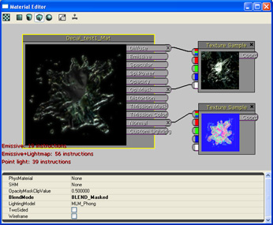
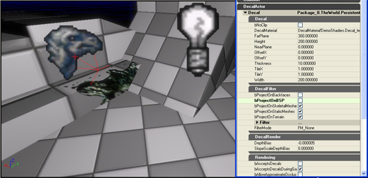

UDN
Search public documentation:
UsingDecalsJP
English Translation
中国翻译
한국어
Interested in the Unreal Engine?
Visit the Unreal Technology site.
Looking for jobs and company info?
Check out the Epic games site.
Questions about support via UDN?
Contact the UDN Staff
中国翻译
한국어
Interested in the Unreal Engine?
Visit the Unreal Technology site.
Looking for jobs and company info?
Check out the Epic games site.
Questions about support via UDN?
Contact the UDN Staff
Decal システムの参照
概要
Decal とは？
静的 Decal
静的 Decal とは、UnrealEd のレベルに配置される Decal です。静的 Decal のランタイム コストは、 Decal に使用するポリゴン数が極めて少ない場合や、衝突、遮断、および影の投影がない場合を除けば、おおむね静的メッシュと同程度です。動的 Decal
動的 Decal とは、ゲームプレー中にスポーンされた Decal ―例えば、武器による一撃が命中した場合の効果などのことです。ゲーム内でスポーンされる Decal には一時的な作成コストがかかりますが、その後のフレームごとにかかるコストは静的 Decal と同じです（DRAW ～書込み後の直接呼出しのみ）。Decal マテリアル
- 透明なマテリアルを使用したDecals は、他の透明メッシュタイプよりフォグ対象に異なったレンダリングをします。
- Lit マテリアルを使用しているDecals は、マテリアルで演算された法線を Decal タンジェントフレームに変換しなくてはいけません。
- Decal で使用されていないシェーダ (例:シャドウ、zのみ、速度など) は、Decal マテリアル用にコンパイルされません。つまり、非Decal メッシュに適用されたDecal マテリアルは、正確に言えば、シャドウの投げ掛け、モーションブラーにかかわることはありません。
Decal マテリアルの作成
通常のマテリアルと同様に、Decal マテリアルを作成するには、 コンテンツブラウザ 内で右クリックし、 New Decal Material (新たな Decal マテリアル) を選択します。マテリアルの名前と目的のパッケージを選択して、[ OK ] ボタンをクリックします。 コンテンツブラウザ 内に新たな Decal マテリアルのオブジェクトが表示されます。それをダブルクリックしてマテリアルエディタを開き、マテリアルの設定を行います。

Decal をレベルに追加する
Decal の作成
シーンに Decal を追加する最も簡単な方法は、汎用ブラウザからある 「Decal マテリアル」を選択し、キーボードの [D] を押し続けながら、パースペクティブ ビューポートにあるサーフェス上でマウスの左ボタンをクリックします。これにより、サーフェス上に投影する Decal が作成されます。また別の方法としては、右ボタンクリックによる標準メニューの [Add Actor](アクタの追加)オプションを使用し Decal を作成することですが、この方法でインスタンス化した Decal については、手動で方向を設定しなければなりません。
サイズ設定、タイリング、およびオフセット
Decal が作成されると、変換と回転のウェジットを利用し、位置と方向の設定を行います。 非均等スケーリング ウィジットでは、 Decal ボリュームの幅、高さ、および遠隔プレ―ン距離について操作できます。
Decal マテリアルについては、[OffsetX]、[OffsetY] および [TileX]、[TileY] のプロパティをタイリングし、オフセット（移動）することができます。 これらのプロパティもまた非均等スケーリング ウェジットにリンクされています。非均等スケーリング ウェジットで、[Shift] ボタンを押しながらドラッグすると Decal マテリアルのタイリングを、[Alt] ボタンを押しながらドラッグすればオフセットを、それぞれ操作することができます。
下のイメージは、広いタイリング Decal により BSP ピース間の継ぎ目を覆い隠している例です。
非均等スケーリング ウィジットでは、 Decal ボリュームの幅、高さ、および遠隔プレ―ン距離について操作できます。
Decal マテリアルについては、[OffsetX]、[OffsetY] および [TileX]、[TileY] のプロパティをタイリングし、オフセット（移動）することができます。 これらのプロパティもまた非均等スケーリング ウェジットにリンクされています。非均等スケーリング ウェジットで、[Shift] ボタンを押しながらドラッグすると Decal マテリアルのタイリングを、[Alt] ボタンを押しながらドラッグすればオフセットを、それぞれ操作することができます。
下のイメージは、広いタイリング Decal により BSP ピース間の継ぎ目を覆い隠している例です。

受信サーフェスの操作
Decal フィルターのプロパティ カテゴリーには、 Decal マテリアルを投影できるサーフェスを操作する際に利用できるプロパティリストが用意されています。BSP、StaticMesh、SkeletalMesh、およびテレインに、 Decal を投影できるかどうかを設定するチェックボックスが用意されています。 下のイメージ図では、 Decal がBSPに投影されないように設定されており、これは StaticMesh 上に Decal されたものだけを見ることができます。
Decal はフィルターや FilterMode のプロパティーも備えており、これらによって投影可能な Decalをアクタごとに操作することが可能です。以下の例では、FM_Ignore というフィルターモードのある静的メッシュが追加されており、これにより StaticMesh のみが Decal によって無視されています。
プログラマー向け
トラブルシューティング
ミップマップとの衝突
Decal テクスチャ上のミップマッピングの有効化は、Decal エッジの周りでアーチファクトを引き起こします: 次のその問題と回避方法の詳細を記載します:
Decal テクスチャ座標は、decal イメージ平面上に受信ジオメトリを投影することにより演算されます。
受信ジオメトリが Decal 視錐台 (デフォルトの挙動) に対してクリップされた場合、Decal 視錐台の外側にフィルレートが存在せず、Decal テクスチャ座標値は、[0,1] になります。
Decal コンポーネントがテレインに投影している、または UDecalComponent::bNoClip が True に設定されている場合は、Decal ジオメトリは Decal 視錐台クリップされません。むしろ、オリジナルメッシュの頂点は「Decal 頂点」として使用されます。デフォルトの挙動と比較すると、「noClip」パスは余分なフィルレートを生じますが、「noClip」として、短い連想時間で実行されます。
なお、noClip による方法では、Decal イメージ平面の外側に投影する頂点が、負のテクスチャ座標値をもつことになります。すなわち、Decal マテリアルで使用されるテクスチャのアドレスモードが、クランプされたテクスチャアドレッシングを使用する必要があるということになります。
ストリーキング (縞) の原因は、低レベルのミップを計算するために使用されたフィルタリングが、非ゼロのカラーをエッジテクセルに流し出すためであり、また、そのテクセルは、テクスチャ上のクランプされたアドレッシングが原因となって、他のフラグメントにまたがってストリーキング化されています。ストリーキングを修正するには、Decal マテリアルにおけるテクスチャのためのテクスチャプロパティを開いて、テクスチャ上の bPreserveBorderR/G/B/A フラグを設定することによって、透明なボーダーピクセルが低いミップ上で保存されるようにします。
次のその問題と回避方法の詳細を記載します:
Decal テクスチャ座標は、decal イメージ平面上に受信ジオメトリを投影することにより演算されます。
受信ジオメトリが Decal 視錐台 (デフォルトの挙動) に対してクリップされた場合、Decal 視錐台の外側にフィルレートが存在せず、Decal テクスチャ座標値は、[0,1] になります。
Decal コンポーネントがテレインに投影している、または UDecalComponent::bNoClip が True に設定されている場合は、Decal ジオメトリは Decal 視錐台クリップされません。むしろ、オリジナルメッシュの頂点は「Decal 頂点」として使用されます。デフォルトの挙動と比較すると、「noClip」パスは余分なフィルレートを生じますが、「noClip」として、短い連想時間で実行されます。
なお、noClip による方法では、Decal イメージ平面の外側に投影する頂点が、負のテクスチャ座標値をもつことになります。すなわち、Decal マテリアルで使用されるテクスチャのアドレスモードが、クランプされたテクスチャアドレッシングを使用する必要があるということになります。
ストリーキング (縞) の原因は、低レベルのミップを計算するために使用されたフィルタリングが、非ゼロのカラーをエッジテクセルに流し出すためであり、また、そのテクセルは、テクスチャ上のクランプされたアドレッシングが原因となって、他のフラグメントにまたがってストリーキング化されています。ストリーキングを修正するには、Decal マテリアルにおけるテクスチャのためのテクスチャプロパティを開いて、テクスチャ上の bPreserveBorderR/G/B/A フラグを設定することによって、透明なボーダーピクセルが低いミップ上で保存されるようにします。
レンダリングされない場合
配置した Decal がエディタまたはゲーム内で表示されない場合は、以下の点を確認してください。- ビューポートが Lit (リット) ビューモードにセットされている。(光源がないと Decal は表示されません)。
- Decal が受け手と同じレベルにある。(複数のレベルの受け手に投影する必要がある場合は、それぞれのレベルに複製されている)。
- 受け手のメッシュコンポーネント上で、 bAcceptsStaticDecals が true になっている。
- Decal において、適切な bProjectsOnBSP/StaticMeshes などのフラグがセットされている。
- Decal のフィルター内に何も入っていない。